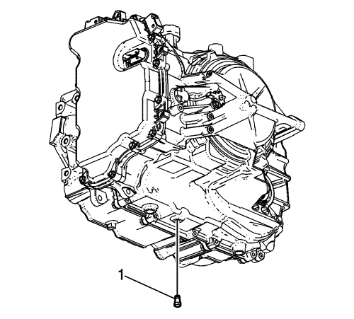
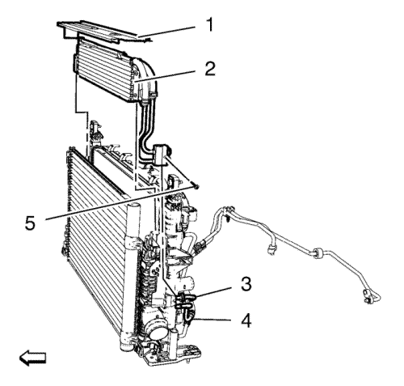

Cruze
Sustitución del enfriador auxiliar de aceite del cambio
Procedimiento de desmontaje
Desmonte el soporte de refuerzo de la rejilla del radiador. Consultar
Sustitución del soporte de refuerzo de la rejilla del radiador
.

Extraiga el tapón de drenaje del nivel del aceite (1).
Vacíe el aceite del cambio en un envase adecuado.

Desacople el tubo de salida del enfriador del aceite del cambio (3) y el tubo intermedio del enfriador del aceite del cambio (4) del enfriador auxiliar del aceite del cambio. Consultar
Desconexión y conexión del enchufe rápido del tubo flexible / tubería del refrigerador de aceite del cambio
.
Desmonte el perno del tubo del enfriador auxiliar del aceite del cambio (5).
Desmonte el sello de aire del radiador (1).
Desmonte el enfriador auxiliar del aceite del cambio (2).
Procedimiento de montaje
Monte el enfriador auxiliar del aceite del cambio (2).
Precaución:
Consulte
Precaución con las fijaciones
en la sección Prólogo
Monte el perno del tubo del enfriador de aceite del motor (5) y apriételo con
4 N·m (35 lib. pulg.)
.
Monte el tubo intermedio del enfriador del aceite del cambio (4) y el tubo de salida del enfriador del aceite (3) al enfriador auxiliar del aceite del cambio. Consultar
Desconexión y conexión del enchufe rápido del tubo flexible / tubería del refrigerador de aceite del cambio
.
Monte el sello de aire del radiador (1).
Monte el tapón de drenaje del nivel del aceite (1) y apriételo a
12 N·m (106 lib. pulg.)
Llene de aceite del cambio y compruebe el nivel de aceite del cambio. Consultar
Comprobación del nivel y el estado del aceite del cambio
.
Monte el apoyo de refuerzo de la rejilla del radiador. Consultar
Sustitución del soporte de refuerzo de la rejilla del radiador
.
© Copyright Chevrolet. Reservados todos los derechos